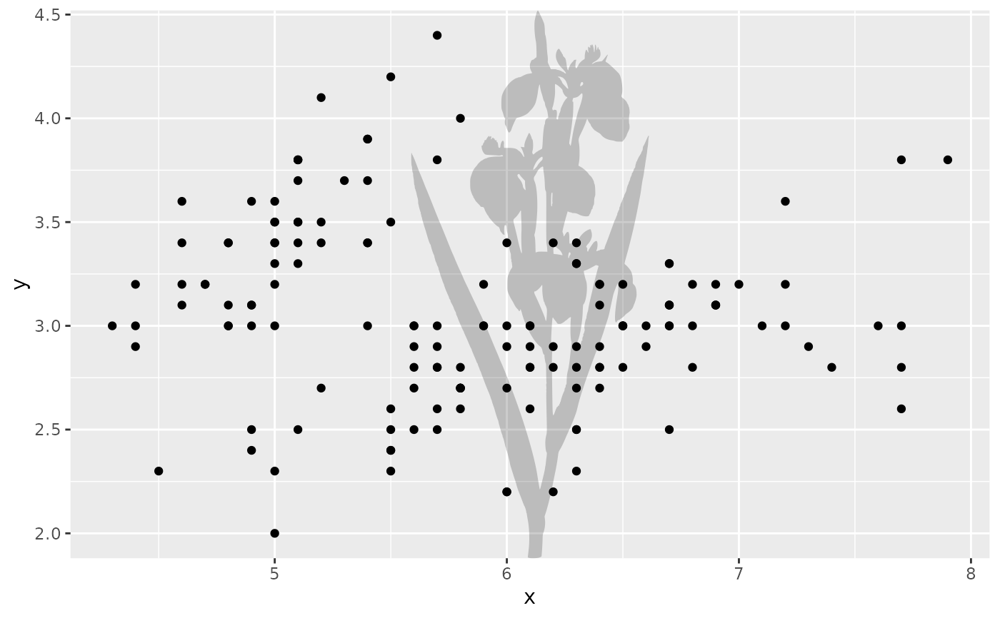
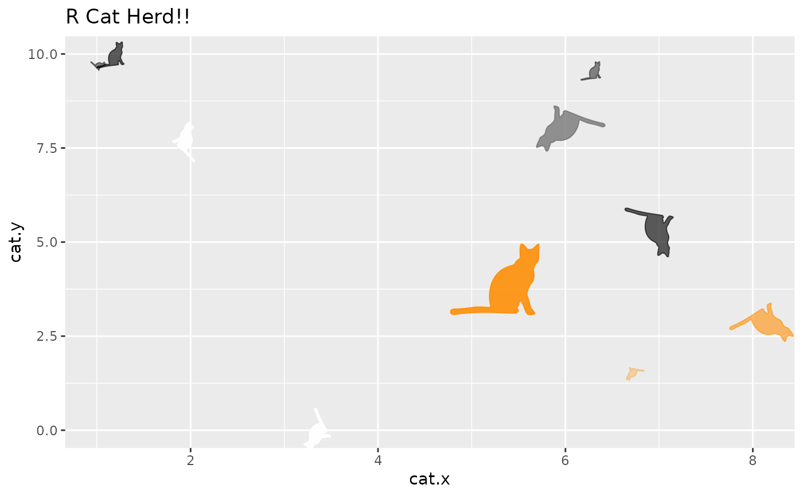

Specify existing images, taxonomic names, or PhyloPic uuids to add PhyloPic silhouettes as a separate layer to an existing ggplot plot.
Usage
add_phylopic(
img = NULL,
name = NULL,
uuid = NULL,
filter = NULL,
x,
y,
ysize = Inf,
alpha = 1,
color = "black",
fill = NA,
horizontal = FALSE,
vertical = FALSE,
angle = 0,
remove_background = TRUE,
verbose = FALSE
)Arguments
- img
A Picture or png array object, e.g., from using
get_phylopic().- name
character. A taxonomic name to be passed toget_uuid().- uuid
character. A valid uuid for a PhyloPic silhouette (such as that returned byget_uuid()orpick_phylopic()).- filter
character. Filter by usage license ifnameis defined. Use "by" to limit results to images which do not require attribution, "nc" for images which allows commercial usage, and "sa" for images without a ShareAlike clause. The user can also combine these filters as a vector.- x
numeric. x value of the silhouette center.- y
numeric. y value of the silhouette center.- ysize
numeric. Height of the silhouette. The width is determined by the aspect ratio of the original image. If "Inf", the default, the height will be as tall as will fit within the plot area.- alpha
numeric. A value between 0 and 1, specifying the opacity of the silhouette (0 is fully transparent, 1 is fully opaque).- color
character. Color of silhouette outline. If "original" or NA is specified, the original color of the silhouette outline will be used (usually the same as "transparent").- fill
character. Color of silhouette. If "original" is specified, the original color of the silhouette will be used (usually the same as "black"). Ifcoloris specified andfillis NA the outline and fill color will be the same.- horizontal
logical. Should the silhouette be flipped horizontally?- vertical
logical. Should the silhouette be flipped vertically?- angle
numeric. The number of degrees to rotate the silhouette clockwise. The default is no rotation.- remove_background
logical. Should any white background be removed from the silhouette(s)? Seerecolor_phylopic()for details.- verbose
logical. Should the attribution information for the used silhouette(s) be printed to the console (seeget_attribution())?
Details
One (and only one) of img, name, or uuid must be specified.
Use parameters x, y, and ysize to place the silhouette at a specified
position on the plot. The aspect ratio of the silhouette will always be
maintained.
x and/or y may be vectors of numeric values if multiple silhouettes
should be plotted at once. In this case, any other arguments (except for
remove_background) may also be vectors of values, which will be recycled
as necessary.
When specifying a horizontal and/or vertical flip and a rotation, the
flip(s) will always occur first. If you would like to customize this
behavior, you can flip and/or rotate the image within your own workflow
using flip_phylopic() and rotate_phylopic().
Note that png array objects can only be rotated by multiples of 90 degrees. Also, outline colors do not currently work for png array objects.
Examples
# Put a silhouette behind a plot based on a taxonomic name
library(ggplot2)
ggplot(iris) +
add_phylopic(x = 6.1, y = 3.2, name = "Iris", alpha = 0.2) +
geom_point(aes(x = Sepal.Length, y = Sepal.Width))
#> Warning: You've used the `name` aesthetic/argument. You may want to use `verbose = TRUE` to get attribution information for the silhouette(s).

# Put a silhouette in several places based on UUID
posx <- runif(10, 0, 10)
posy <- runif(10, 0, 10)
sizey <- runif(10, 0.4, 2)
angle <- runif(10, 0, 360)
hor <- sample(c(TRUE, FALSE), 10, TRUE)
ver <- sample(c(TRUE, FALSE), 10, TRUE)
cols <- sample(c("black", "darkorange", "grey42", "white"), 10,
replace = TRUE)
alpha <- runif(10, 0.3, 1)
p <- ggplot(data.frame(cat.x = posx, cat.y = posy), aes(cat.x, cat.y)) +
geom_blank() +
add_phylopic(uuid = "23cd6aa4-9587-4a2e-8e26-de42885004c9",
x = posx, y = posy, ysize = sizey,
color = cols, alpha = alpha, angle = angle,
horizontal = hor, vertical = ver)
p + ggtitle("R Cat Herd!!")
